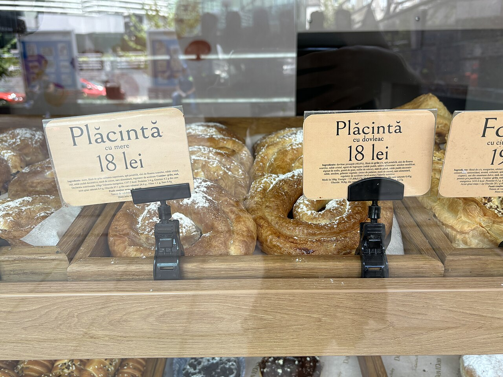
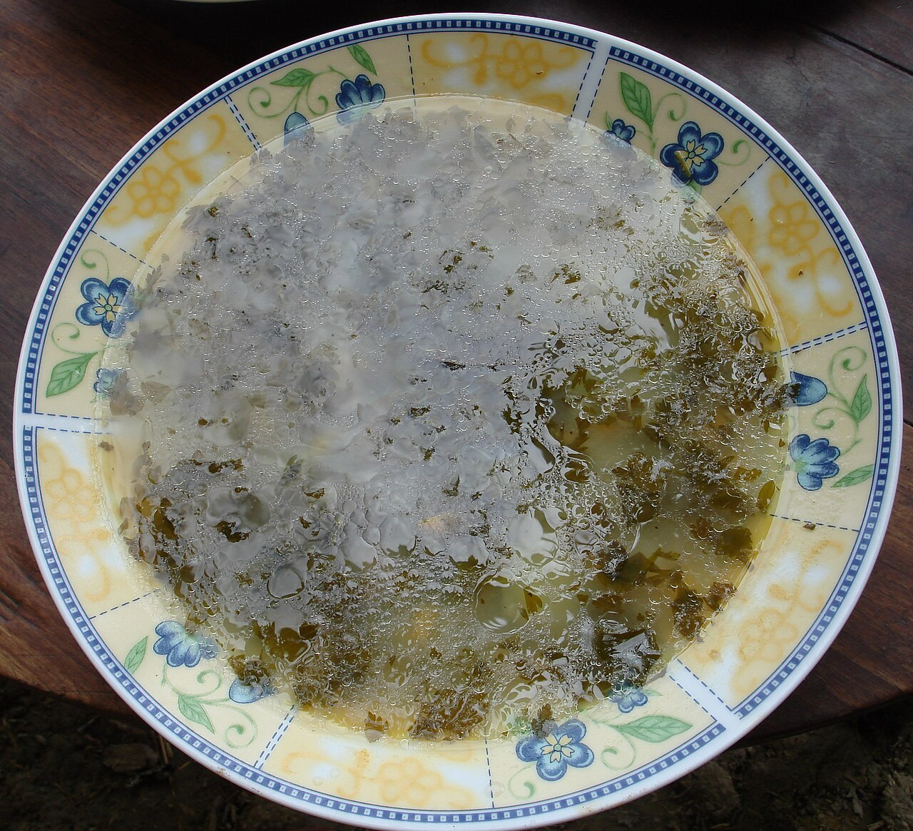
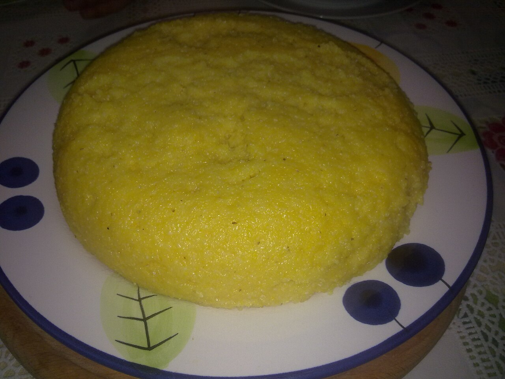
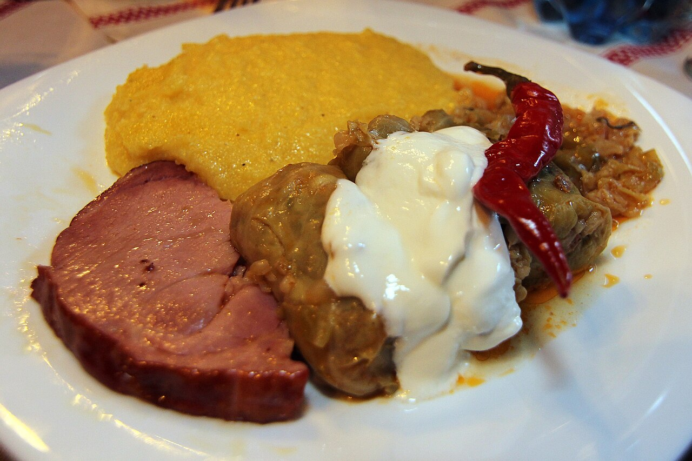
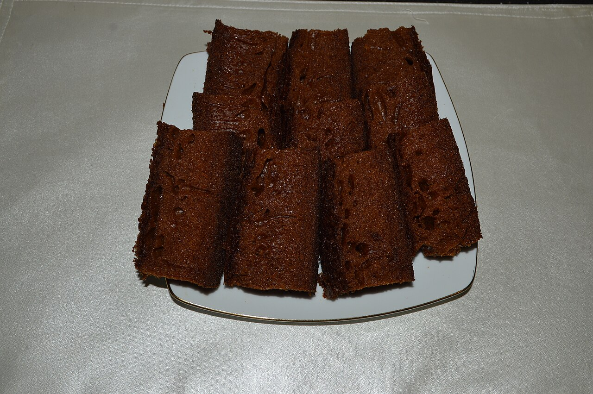
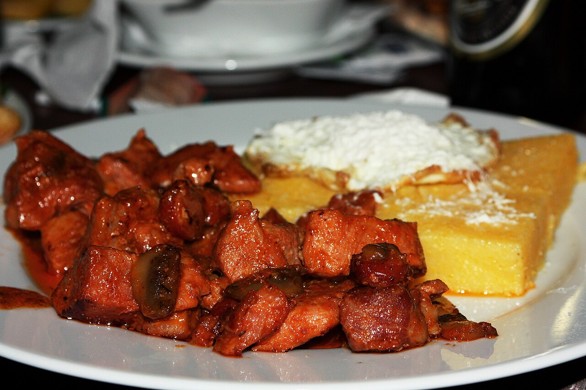
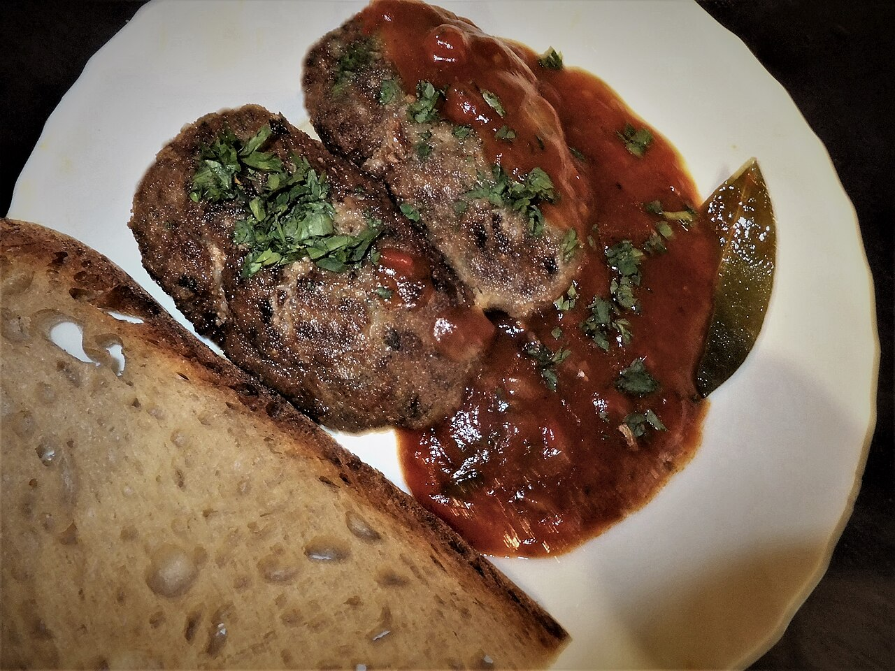
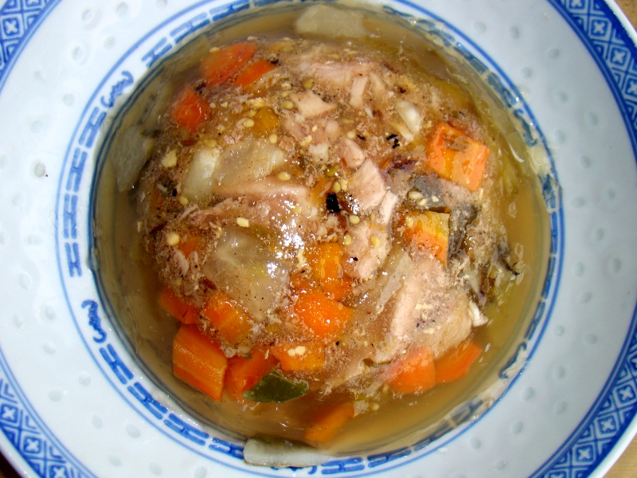
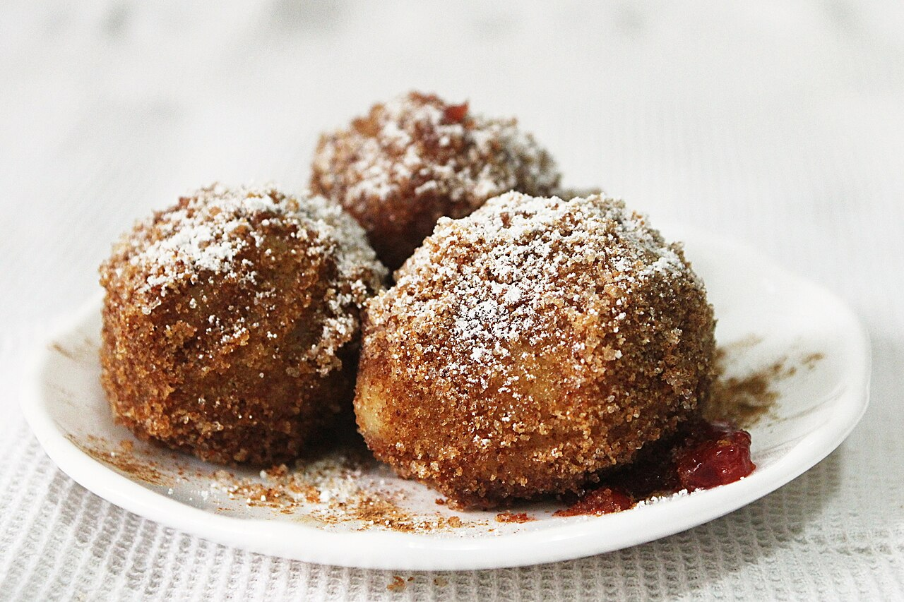
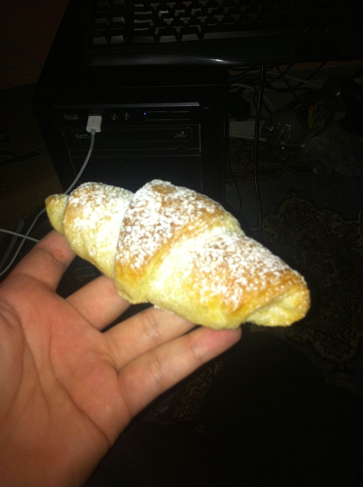

대표 음식 15종
사진은 Wikimedia Commons에 공개된 실제 촬영본이며, 저작자와 라이선스를 각 사진 아래에 적었습니다. 촬영한 식당·지역·조리법에 따라 실제 모습은 다를 수 있습니다. 맞는 사진을 아직 찾지 못한 5곳은 비워 두었습니다.
-

사진: Stuhrchacz · CC BY-SA 4.0 · Wikimedia Commons -

사진: 작성자 미상(Commons 파일 페이지 참고) · Public domain · Wikimedia Commons -

사진: Ion.bostan · CC BY-SA 3.0 · Wikimedia Commons -

사진: Nicubunu · CC BY-SA 3.0 · Wikimedia Commons -

사진: Alina25vv · CC BY-SA 4.0 · Wikimedia Commons 바바 네아그러Baba neagră
속은 촉촉하고 겉은 짙은 갈색이 되는 전통 오븐 디저트.
-
사진 준비 중
맞는 사진을 구하는 대로 채웁니다. 다른 사진으로 대신하지 않습니다. 쿠슈마 루이 구구처Cușma lui Guguță
체리가 들어간 얇은 크레페를 여러 층 쌓아 크림으로 덮는 디저트.
-
사진 준비 중
맞는 사진을 구하는 대로 채웁니다. 다른 사진으로 대신하지 않습니다. -

사진: Nicubunu · CC BY-SA 3.0 · Wikimedia Commons 토키투러Tochitură
돼지고기 등을 소스에 조리해 머멀리거·달걀과 곁들이는 육류식.
-

사진: Sacha47 · CC BY-SA 4.0 · Wikimedia Commons -

사진: Silar · CC BY-SA 3.0 · Wikimedia Commons -
사진 준비 중
맞는 사진을 구하는 대로 채웁니다. 다른 사진으로 대신하지 않습니다. -

사진: Nicubunu · CC BY-SA 3.0 · Wikimedia Commons -
사진 준비 중
맞는 사진을 구하는 대로 채웁니다. 다른 사진으로 대신하지 않습니다. 플라키에 데 페슈테Plachie de pește
토마토·양파 소스에 민물고기를 구운 요리.
-
사진 준비 중
맞는 사진을 구하는 대로 채웁니다. 다른 사진으로 대신하지 않습니다. -

사진: Consortium · CC BY-SA 3.0 · Wikimedia Commons
함께 알아두면 좋은 점
- 알레르기·식단: 성분과 조리법은 식당·가정마다 달라 일반화할 수 없습니다. 알레르기나 식단 제한이 있다면 주문 전에 직접 확인하세요.